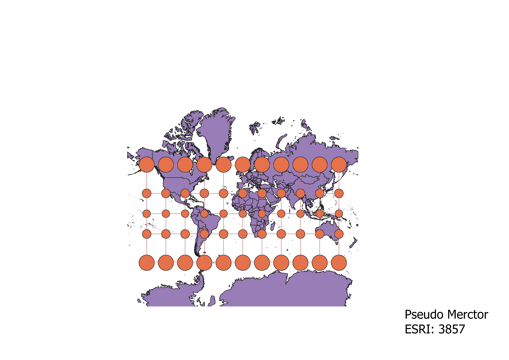
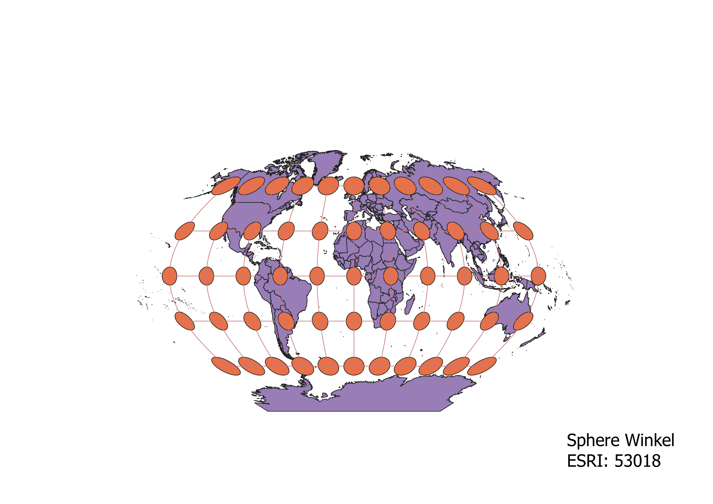
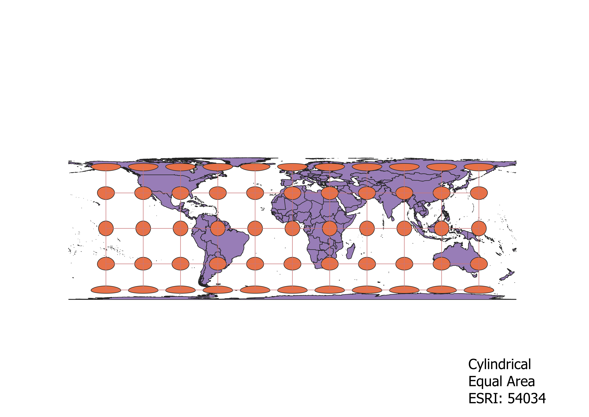
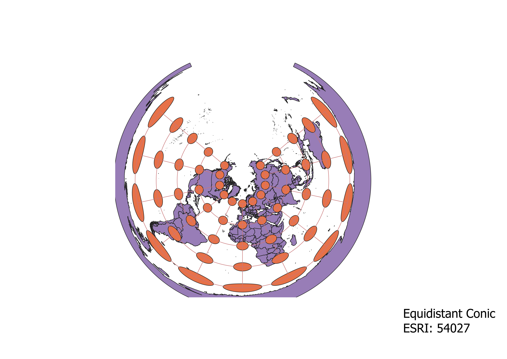
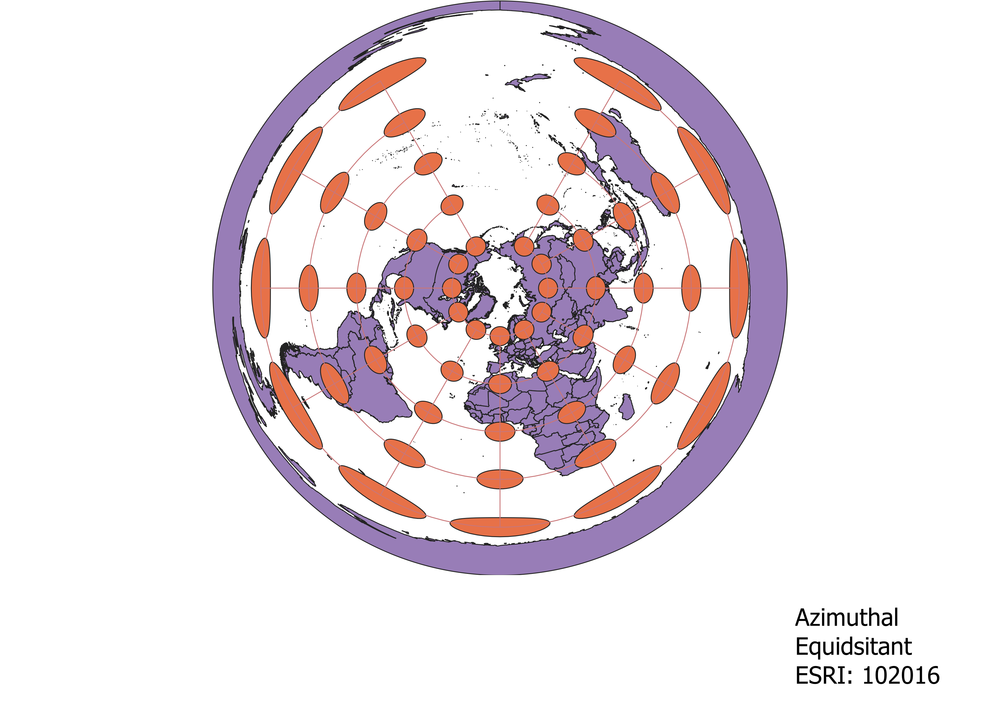
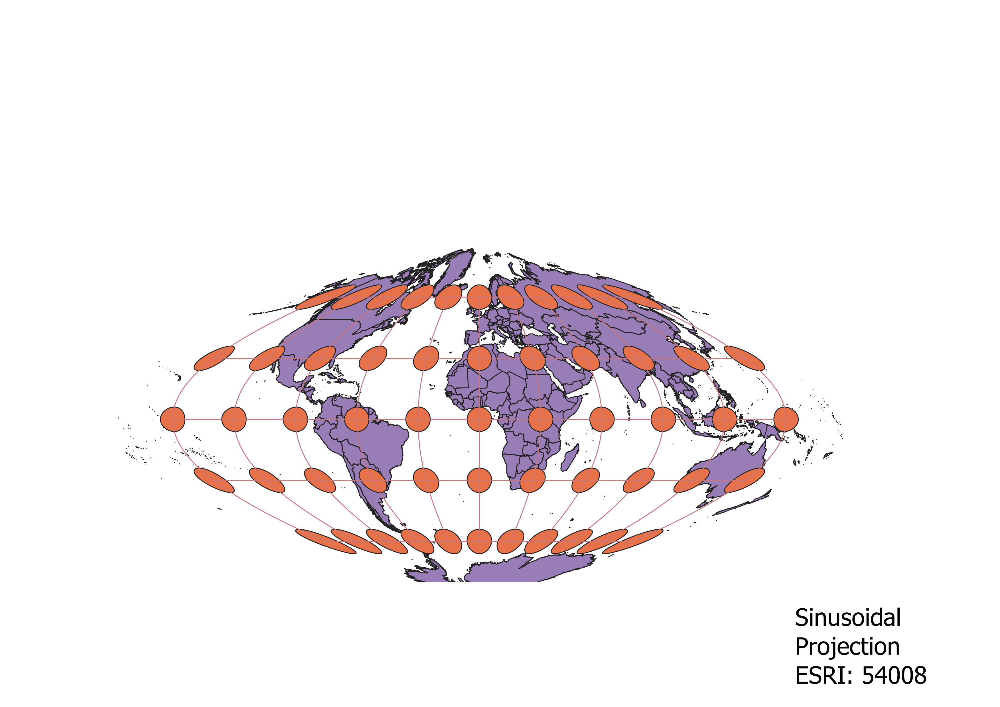
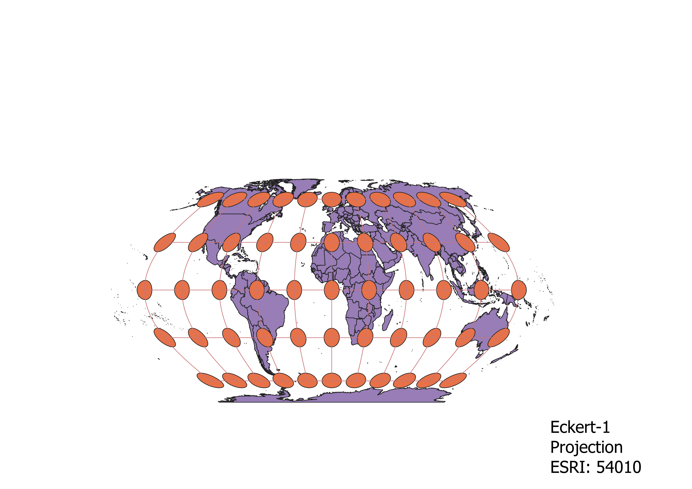

In this project I learned how to display images in different projections
Describe in your own words how you displayed the map in different projections using QGIS
You can write a paragraph here
WGS84 Projection
This projection is made in a way to maintain the area between the map. As such there is minimal stretch
until the further one goes away from the equator.
In which case the land masses seem to be compressed.

Aitoff Projection
This projection is made around a stretched ellipsoid. Therfore allowing for the area and proportion
of the land to be displayed correctly,
while only having mild distortions around the edges
of the elliposid

Pseudo Mercator
The projection of the Pseudomercator is desgined around a cylinder wrapping around the globe.
This cylindracl property allows for proportionate sizes around
the equator, while becoming larger the farther
away one strays from the equator.

Sphere Winkel
The shape spherical liked shape of this projection allows for their to be as little distortion around the entire map.
Therefore allowing for a realitvely clear
observation of all the land areas.

Cylndrical Equal Area
This projection allows for the area in between the boxes created by the circles to be preserved.
As such allowing for a clear interpretation of the geography along
the equator, while distorting the shape
of the land further North or South.

Equidistant Conic
This projection resembles what would happen if a cone would be wrapped around the Earth.
As such it allows for a relatively
proportiante view of land masses streting around the North Pole
, while causing distortions the further south one moves

Azimuthal Equidistant
This projection is extremly similar to the Equidsitant conic approach as it focuses one centeral point.
However, the main difference comes from having all points
be distanced around that central point, recreating a
sort of symetry

Sinusoidal Projection
This Sinousiodal projection is projected in such a way to maintain the area and proportion of Africa
to the greates extent. However this causes most other areas to
become extremly distorted. Especially the ones at
southern and northern tip since this projection seems to pinch and stretch the top and bottom of the map.

Eckert-I Projection
This projection has an extremly intersting shape, as it is projected in a shape resembling a stretched out hexagon.
Causing distortion when moving towards the edges,
but it allows the conservation of area in both eastern Europe and Africa.

Data used for this project
Download Natrual Earth 1:10m Cultural Vector